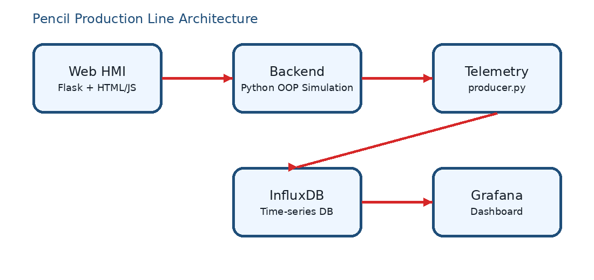

Advanced Programming Final Project
This website describes my manufacturing production line project. The selected product is a pencil assembled from graphite core, wooden body, eraser, and ferrule.
The project includes a Python backend, industrial-style desktop HMI, optional Flask web HMI, InfluxDB telemetry, Grafana dashboard, GitHub repository, README, and PDF documentation.
Project Overview
Make Core
→QC Core
→Bin
→Assembly
→Final QC
→Pack
→Ship
Architecture Image
The backend, HMI, telemetry, database, and dashboard are separated so that the interface is not the source of truth.

Project Links
GitHub Repository: https://github.com/qaisgh08/qaisgh08.github.io